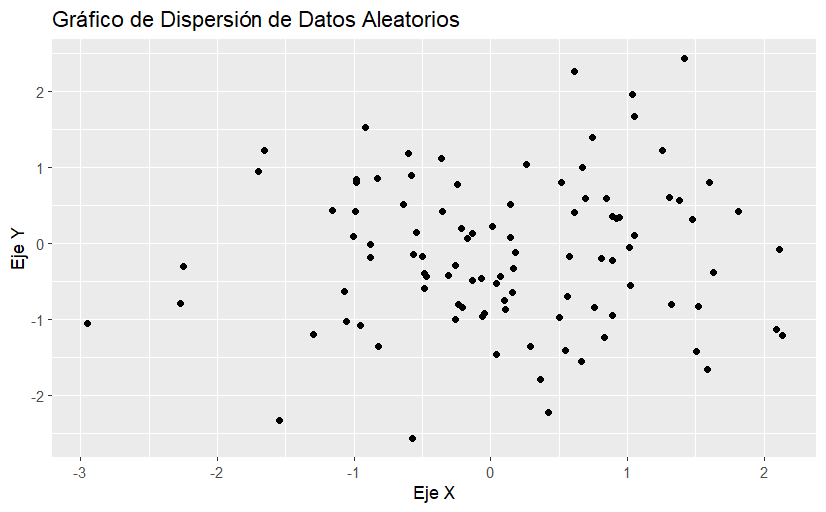
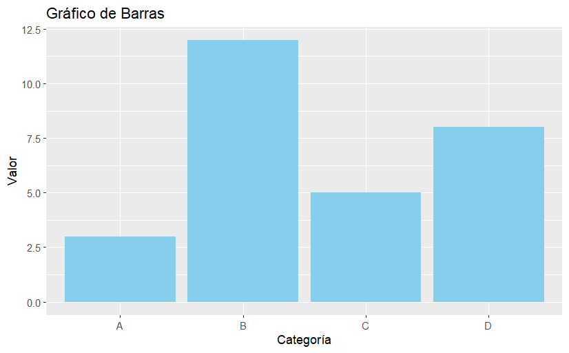
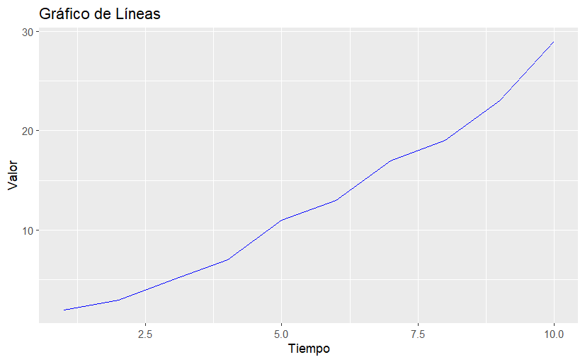
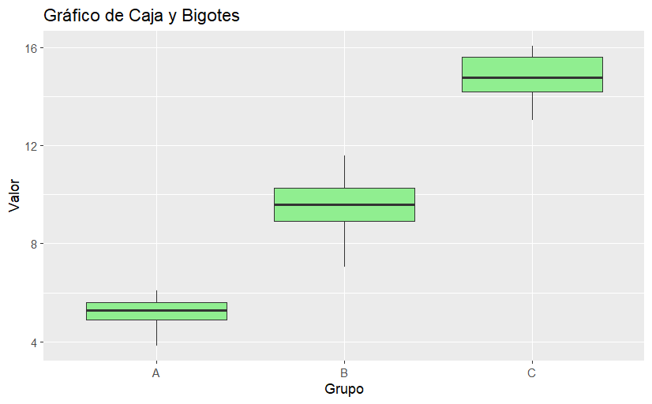

R es un lenguaje de programación y un entorno de software libre utilizado principalmente para el análisis estadístico y la visualización gráfica. Fue desarrollado por Robert Gentleman y Ross Ihaka en 1993 en la Universidad de Auckland, Nueva Zelanda, y ha ganado una popularidad significativa en la comunidad de la ciencia de datos y la estadística.
R se destaca por su capacidad para manejar, almacenar y analizar datos. Aquí hay algunas razones por las cuales deberías considerar aprender R:
Para empezar a usar R, necesitas instalarlo en tu computadora. Además, se recomienda utilizar RStudio, un entorno de desarrollo integrado (IDE) que facilita la escritura de código en R.
Vamos a comenzar con algunos conceptos básicos y ejemplos de código en R.
En R, puedes asignar valores a variables utilizando el operador de asignación <-. Aquí tienes un ejemplo:
# Asignación de un número a una variable
mi_numero <- 42
# Asignación de una cadena de texto a una variable
mi_texto <- "Hola, mundo!"
# Mostrar los valores de las variables
print(mi_numero)
print(mi_texto)
Salida en consola:
> print(mi_numero)
[1] 42
> print(mi_texto)
[1] "Hola, mundo!"
R puede realizar una variedad de operaciones matemáticas básicas:
# Suma
suma <- 5 + 3
# Resta
resta <- 10 - 4
# Multiplicación
multiplicacion <- 7 * 6
# División
division <- 20 / 5
# Mostrar los resultados
print(suma)
print(resta)
print(multiplicacion)
print(division)
Salida en consola:
> print(suma)
[1] 8
> print(resta)
[1] 6
> print(multiplicacion)
[1] 42
> print(division)
[1] 4
Los vectores son una de las estructuras de datos más importantes en R. Puedes crear un vector utilizando la función c():
# Crear un vector de números
numeros <- c(1, 2, 3, 4, 5)
# Acceder a elementos del vector
primer_elemento <- numeros[1]
tercer_elemento <- numeros[3]
# Mostrar los elementos
print(primer_elemento)
print(tercer_elemento)
Salida en consola:
> print(primer_elemento)
[1] 1
> print(tercer_elemento)
[1] 3
R tiene muchas funciones predefinidas y también permite crear tus propias funciones. Aquí tienes un ejemplo de una función que calcula el cuadrado de un número:
# Definir una función
cuadrado <- function(x) {
return(x^2)
}
# Usar la función
resultado <- cuadrado(4)
# Mostrar el resultado
print(resultado)
Salida en consola:
> print(resultado)
[1] 16
R es muy poderoso para la visualización de datos. Una de las bibliotecas más populares para esto es ggplot2. Aquí tienes un ejemplo de cómo crear un gráfico de dispersión:
# Instalar y cargar ggplot2
install.packages("ggplot2")
library(ggplot2)
# Crear datos de ejemplo
datos <- data.frame(
x = rnorm(100),
y = rnorm(100)
)
# Crear gráfico de dispersión
ggplot(datos, aes(x = x, y = y)) +
geom_point() +
labs(title = "Gráfico de Dispersión de Datos Aleatorios",
x = "Eje X",
y = "Eje Y")
Salida en consola:
La biblioteca ggplot2 en R es una de las herramientas más potentes para la visualización de datos. Te permite crear gráficos detallados y personalizados de manera sencilla.
Un gráfico de barras es útil para representar datos categóricos. Aquí tienes un ejemplo de cómo crear un gráfico de barras con ggplot2:
# Crear datos de ejemplo
datos_barras <- data.frame(
categoria = c("A", "B", "C", "D"),
valor = c(3, 12, 5, 8)
)
# Crear gráfico de barras
ggplot(datos_barras, aes(x = categoria, y = valor)) +
geom_bar(stat = "identity", fill = "skyblue") +
labs(title = "Gráfico de Barras", x = "Categoría", y = "Valor")
Salida en consola:
Un gráfico de líneas es ideal para mostrar cambios a lo largo del tiempo. Aquí tienes un ejemplo:
# Crear datos de ejemplo
datos_lineas <- data.frame(
tiempo = 1:10,
valor = c(2, 3, 5, 7, 11, 13, 17, 19, 23, 29)
)
# Crear gráfico de líneas
ggplot(datos_lineas, aes(x = tiempo, y = valor)) +
geom_line(color = "blue") +
labs(title = "Gráfico de Líneas", x = "Tiempo", y = "Valor")
Salida en consola:
Un gráfico de caja y bigotes (o boxplot) es útil para visualizar la distribución de datos y detectar posibles valores atípicos. Aquí tienes un ejemplo:
# Crear datos de ejemplo
datos_caja <- data.frame(
grupo = rep(c("A", "B", "C"), each = 20),
valor = c(rnorm(20, mean = 5), rnorm(20, mean = 10), rnorm(20, mean = 15))
)
# Crear gráfico de caja y bigotes
ggplot(datos_caja, aes(x = grupo, y = valor)) +
geom_boxplot(fill = "lightgreen") +
labs(title = "Gráfico de Caja y Bigotes", x = "Grupo", y = "Valor")
Salida en consola:
El paquete dplyr es muy popular para la manipulación de datos en R. Facilita tareas comunes como la filtración, selección y agrupación de datos. Aquí tienes algunos ejemplos básicos:
Para filtrar filas de un conjunto de datos, usa la función filter():
# Instalar y cargar dplyr
install.packages("dplyr")
library(dplyr)
# Crear datos de ejemplo
datos <- data.frame(
nombre = c("Ana", "Luis", "Carla", "Jorge"),
edad = c(23, 30, 25, 35)
)
# Filtrar datos para edades mayores de 25
datos_filtrados <- filter(datos, edad > 25)
# Mostrar los datos filtrados
print(datos_filtrados)
Salida en consola:
> print(datos_filtrados)
nombre edad
1 Luis 30
2 Jorge 35
Para seleccionar columnas específicas de un conjunto de datos, usa la función select():
# Seleccionar la columna 'nombre'
datos_nombres <- select(datos, nombre)
# Mostrar los nombres
print(datos_nombres)
Salida en consola:
> print(datos_nombres)
nombre
1 Ana
2 Luis
3 Carla
4 Jorge
Para agregar una nueva columna basada en cálculos de otras columnas, usa la función mutate():
# Agregar una columna 'edad_al_doble'
datos_mutados <- mutate(datos, edad_al_doble = edad * 2)
# Mostrar los datos mutados
print(datos_mutados)
Salida en consola:
> print(datos_mutados)
nombre edad edad_al_doble
1 Ana 23 46
2 Luis 30 60
3 Carla 25 50
4 Jorge 35 70
Para resumir datos y calcular estadísticas agregadas, usa la función summarize() junto con group_by():
# Crear datos de ejemplo
datos <- data.frame(
grupo = c("A", "A", "B", "B"),
valor = c(10, 15, 20, 25)
)
# Calcular la media de 'valor' por grupo
datos_resumidos <- datos %>%
group_by(grupo) %>%
summarize(media_valor = mean(valor))
# Mostrar los datos resumidos
print(datos_resumidos)
Salida en consola:
> print(datos_resumidos)
# A tibble: 2 × 2
grupo media_valor
1 A 12.5
2 B 22.5
R es ampliamente utilizado para realizar análisis estadísticos. Aquí hay algunos ejemplos básicos:
Una prueba t de dos muestras se usa para comparar las medias de dos grupos. Aquí tienes un ejemplo:
# Crear datos de ejemplo
grupo_a <- c(10, 12, 14, 16, 18)
grupo_b <- c(20, 22, 24, 26, 28)
# Realizar prueba t
resultado_prueba_t <- t.test(grupo_a, grupo_b)
# Mostrar resultados
print(resultado_prueba_t)
Salida en consola:
> print(resultado_prueba_t)
Welch Two Sample t-test
data: grupo_a and grupo_b
t = -5, df = 8, p-value = 0.001053
alternative hypothesis: true difference in means is not equal to 0
95 percent confidence interval:
-14.612008 -5.387992
sample estimates:
mean of x mean of y
14 24
La regresión lineal se utiliza para modelar la relación entre una variable dependiente y una o más variables independientes. Aquí tienes un ejemplo:
# Crear datos de ejemplo
datos_regresion <- data.frame(
x = c(1, 2, 3, 4, 5),
y = c(2, 4, 5, 7, 10)
)
# Ajustar modelo de regresión lineal
modelo <- lm(y ~ x, data = datos_regresion)
# Mostrar resumen del modelo
summary(modelo)
Salida en consola:
> summary(modelo)
Call:
lm(formula = y ~ x, data = datos_regresion)
Residuals:
1 2 3 4 5
0.2 0.3 -0.6 -0.5 0.6
Coefficients:
Estimate Std. Error t value Pr(>|t|)
(Intercept) -0.1000 0.6351 -0.157 0.88488
x 1.9000 0.1915 9.922 0.00218 **
---
Signif. codes: 0 ‘***’ 0.001 ‘**’ 0.01 ‘*’ 0.05 ‘.’ 0.1 ‘ ’ 1
Residual standard error: 0.6055 on 3 degrees of freedom
Multiple R-squared: 0.9704, Adjusted R-squared: 0.9606
F-statistic: 98.45 on 1 and 3 DF, p-value: 0.002178
Para profundizar en el uso de R y sus paquetes, aquí tienes algunos recursos adicionales:
Para más información sobre R y recursos adicionales, puedes visitar los siguientes enlaces: